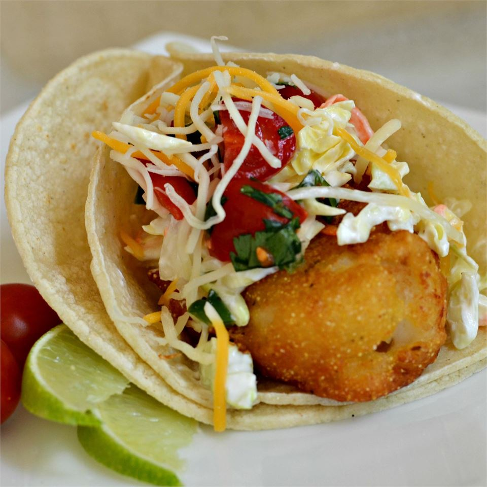

Baja Style Fish Tacos

Description
Authentic fish taco recipe from stree vendor in Ensenada, Mexico
Ingredients
- 6 tomatoes, diced
- 1 small onion, diced
- 1/2 cup chopped fresh cilantro
- 2 tablespoons jalapenos, diced
- 1/2 teaspoon garlic salt
- 1/2 lime, juiced
- 3 cups coleslaw mix
- 3 tablespoons ranch dressing
- 2 cups vegetable oil for frying
- 1 (9 ounce) box batter mix
- 1 (12 fluid ounce) Mexican beer
- 24 corn tortillas
- 1 pound cod fillets, cut into 2-inch chunks
- 2 cups shredded Mexican cheese blend
- 2 limes, sliced into wedges
- 1 dash chile-garlic sauce (optional)